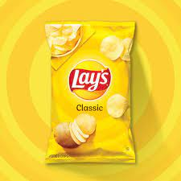
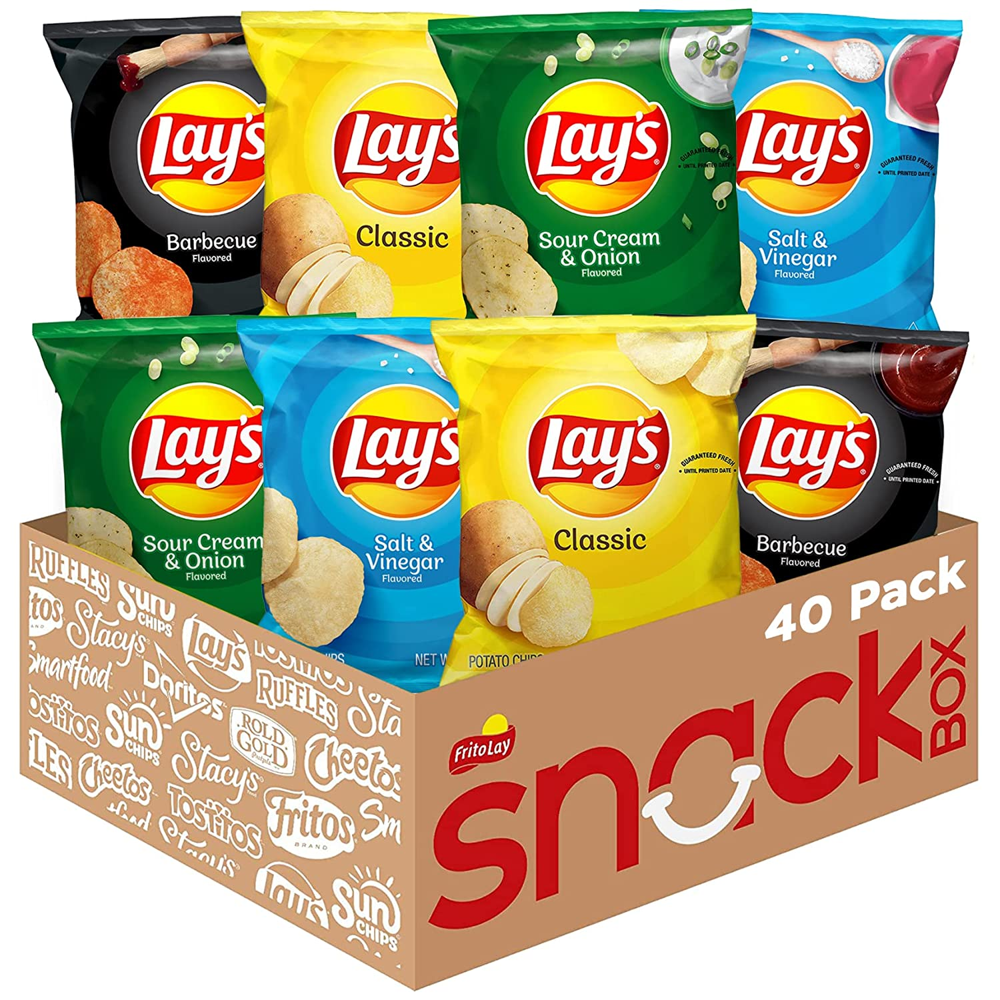

Lay's potato chips can be found in more than 200 varieties in countries around the globe, the salty, crunchy snack item had a humble beginning. To get your hands on a bag of Lay's potato chips in their infancy, you would have to find Mr. Herman Lay and hope that the trunk of his car was stocked with the fried potatoes ready for sale.Herman Lay stepped into the business in 1932, when he opened a company that made various snack foods in Nashville. A few years later, in 1938, he bought another Southern snack business one that made potato chips in Atlanta — called Barrett Food Company. Herman Lay named the combined business H.W, Lay Lingo & Company, quite a mouthful, even for a food manufacturer.
 Not long after, Herman Lay hit the road, traveling throughout the American South hawking his Lay's potato chips out of his car, and making lifelong customers out of the deal. Lay knew he had a great product, and he knew that anyone who tasted it wanted more, he just had to figure out how to take his sales opportunities to a higher level.
 1944, Lay shortened the name of his business to “Lay's Lay Lingo Company” and made a very bold move. Lay's Lay Lingo Company bought television advertisements. It was the first snack manufacturer to advertise on TV, and the first to do so with a celebrity spokesman. That was Bert Lahr.
 While his name might not ring a bell today, chances are very good that you are familiar with at least one role played by Bert Lahr. He was the Cowardly Lion in “Wizard of Oz.” Before he came to fame with that role in 1939, he was a successful comedian and vaudeville star. His film career wasn't particularly strong after “The Wizard of Oz,” but the fame from that role certainly made him a great pick for the Lay's potato chips.
While his name might not ring a bell today, chances are very good that you are familiar with at least one role played by Bert Lahr. He was the Cowardly Lion in “Wizard of Oz.” Before he came to fame with that role in 1939, he was a successful comedian and vaudeville star. His film career wasn't particularly strong after “The Wizard of Oz,” but the fame from that role certainly made him a great pick for the Lay's potato chips.
While his film career was short-lived, Lahr was successful in TV not just in Lay's potato chips commercials but also in other roles and he also found his footing on the stage, winning in a Tony Award for Best Leading Actor in a Musical for “Foxy” in 1964.
 After finding so much success with celebrity spokesman Bert Lahr, Lay's decided to keep on going with a good thing. Over the years, celebrities from all walks of life have done Lay's potato chips ads. In most recent times, actors Tracee Ellis, Anna Kendrick, Seth Rogan and Paul Rudd have been featured in Lay's potato chip commercials.
After finding so much success with celebrity spokesman Bert Lahr, Lay's decided to keep on going with a good thing. Over the years, celebrities from all walks of life have done Lay's potato chips ads. In most recent times, actors Tracee Ellis, Anna Kendrick, Seth Rogan and Paul Rudd have been featured in Lay's potato chip commercials.